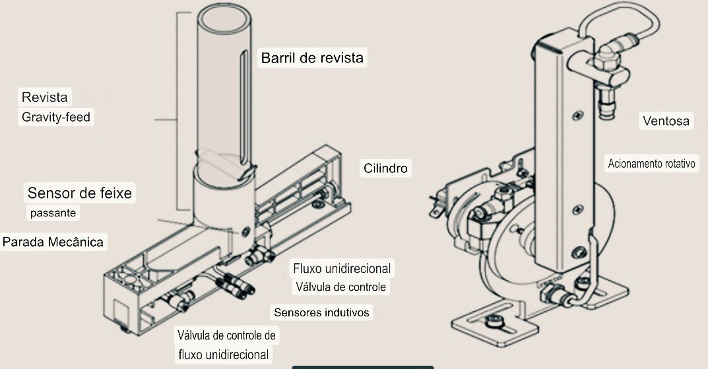
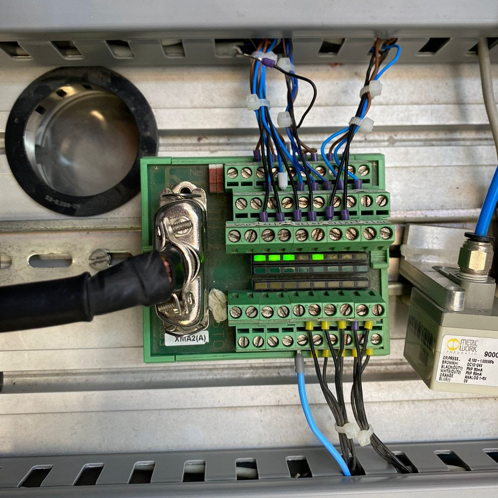
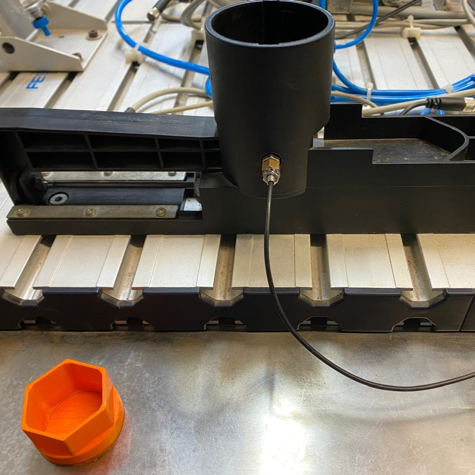
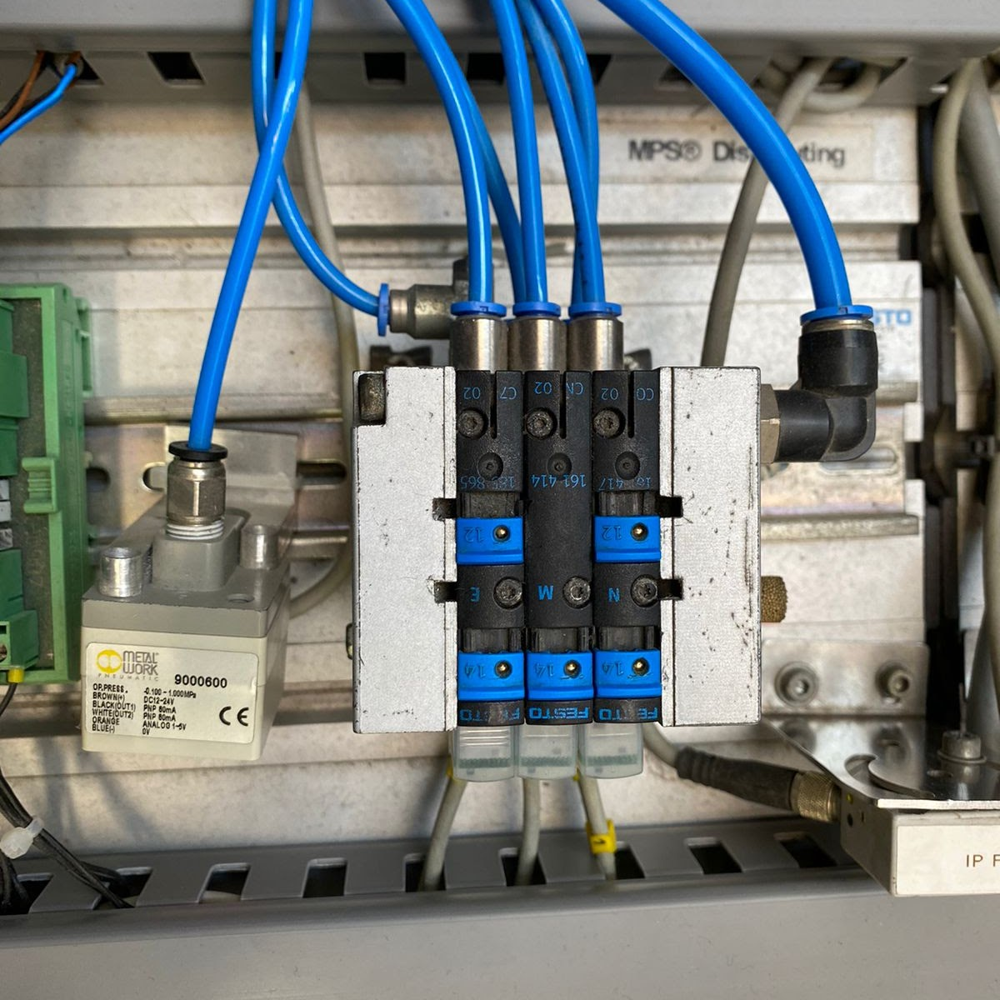
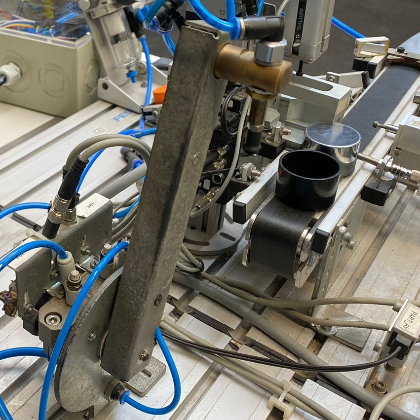

Componentes

A bancada é composta por elementos de comando que definem o percurso e
direcionam o fluxo de ar comprimido. Tem por função orientar a direção
que o fluxo de ar que deve seguir, a fim de realizar um trabalho
proposto.

Bloco de distribuição
São utilizados para distribuir a energia elétrica dentro do painel. Estão disponíveis para sistemas 1,2,3 e 4 polos na corrente de até 400A. Os blocos permitem distribuir os circuitos de alimentação entre os diversos circuitos de carga, com diferentes seções de cabos.

Atuador Pneumático com Magazine
Um atuador com retorno por mola, utiliza a força do ar comprimido para somente avançar o atuador, seu recuo é feito de forma instantânea após o desligamento do fluxo de ar. Possui um magazine que é capaz de armazenar algumas peças.

Válvulas Solenoide pneumáticas
Tem como papel realizar o direcionamento do fluxo dos fluidos, com objetivo de movimentar um dispositivo. Está válvula solenoide pneumática consiste em um tipo de solenoide de padrão eletromecânico, que abre uma válvula sob pressão quando ativada pela eletricidade.
